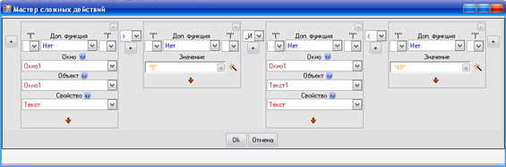

Свернуть все
Свернуть все Описание
Описание
Мастер сложных действий это самая сложная часть среды разработки Алгоритм, но он предоставляет огромные возможности по созданию самых различных программных решений.
Запускается мастер кнопочками с волшебной палочкой, которые располагаются справа от тектовых полей (например в Разделе действий.
Рассмотрим процесс создания сложного действия на примере вычисления сколько лет прошло с введенного в текстовое поле года:
Здесь склеивается (объединяется с другой) строка "Прошло лет: " с результатом вычисления, в котором из года, введенного в Текстовое поле (Окно1.Текст1.Текст), вычитается сегодняшний год. Например, если в текстовое поле ввели "2000", а сегодня "2009" год, то результатом сложного действия, котрое сейчас создано в мастере будет: "Прошло лет: -9", т.к. "2000" - "2009" будет "-9". Если мы нажмем кнопку Ок то мастер выдаст нам результат своей работы. Это будет сложное действие, в данном случае: "Прошло лет: " & (Модуль(Окно1.Текст1.Текст) - _Полезные объекты._Дата._Год(_Полезные объекты._Дата._Сегодня))
Теперь рассмотрим каждый элемент мастера отдельно:
| 1 - Блоки мастера | Мастер состоит из блоков, из которых собираются сложные действия. Блоков может быть сколько угодно, они добавляются кнопкой 2 и удаляются кнопкой 4. Каждый блок может быть в двух состояниях: в простом - когда просто вводятся данные (как например в первом блоке на рисунке) и в сложном - когда можно выбрать свойства объекта (второй и третий блок рисунка). Меняются эти состояния кнопкой 6. |
| 2 - Добавить блок | Эта кнопка добавляет новый блок в то место, где данная кнопка расположена. |
| 3 - Расстановка скобок | У каждого блока есть возможность обособить его скобками. Есть левые и правые скобки, их количество не ограничено и количесво левых может отличаться от количества правых. Например, если нужно в мастере создать действие (("-2")+"3"), то в первом блоке (где будет число "-2") нужно выбрать 2 левые скобки и 1 правую. А во втором блоке (где будет число 3) следует выбрать 1 правую скобку. |
| 4 - Удалить блок | Эта кнопка удаляет блок. |
| 5 - Дополнительная функция | Каждый блок может быть дополнительно обработан функцией. Все дополнительные функции это обычные математичекие операции - корень, синус, косинус, округление, сменить знак. В данном случает в блоке №2 используется функция модуль (функция превращает отрицательное число в положительное) на случай если введут например "-2000". =) |
| 6 - Смена состояния блока | Каждый блок может быть в двух состояниях: в простом - когда просто вводятся данные (как например в первом блоке на рисунке) и в сложном - когда можно выбрать свойства объекта (второй и третий блок рисунка). Данная кнопка и меняет состояния блока с простого на сложное и наоборот. |
| 7 - Связи блоков | Все блоки связаны друг с другом определенной связья. Связь бывает математическая (сложение, деление, склеивание) и логическая (неравно, больше, меньше, _И, _ИЛИ). В данном случае у нас математическая связь, т.е. блоки связаны какой-то математической операцией, в данном случае 2-ой и 3-ий блок связаны вычитанием. Таким образом, блок №2 есть уменьшаемое, а блок №3 вычитаемое. Между блоком 1 и разностью блоков 2 и 3 стоит плюс, следовательно они связаны сложением и результатом действия будет сумма слагаемых блока №1 и (блок №2 - блок №3). Помимо математической связи сущесвует логическая (равно, неравно, больше, меньше либо равно). Она пригодится вам при создании условий и циклов. Ведь результатом условия является либо то, что условие верно, либо то, что условие неверно. Поэтому если требуется создать условие, то используют логические операторы, которые однозначно говорят либо "Да", либо "Нет". Например, выражение "2" < "3" будет либо верны условием, либо неверным. Другого не дано. В данном случае оно верное. Кроме того, если условие сложное, то используют специальные логические операции: _И и _ИЛИ. Если между двумя условиями связь _И, то общим результатом их будет "Да" (т.е. они вместе будут верным условием) только тогда, когда оба условия верны. Например, если требуется проверить чтобы число, введенное в текстовое поле было больше 5 И меньше 10, то в мастере это выглядело бы так:  Аналогично, общим результатом двух условий со связью _ИЛИ будет верное условие тогда, когда хотябы одно из условий верное. Например, если требуется проверить чтобы число, введенное в текстовое поле было меньше 2 ИЛИ больше 7, то в мастере это выглядело бы так: Окно1.Окно1.Текст < "2" _ИЛИ Окно1.Текст1.Текст > "7" |
Смотрите также